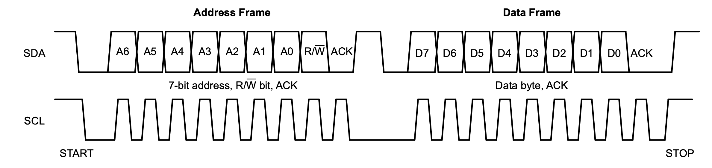

# embedded communications ## **Design of Autonomous Systems** ### csci 6907/4907-Section 86 ### Prof. **Sibin Mohan** --- embedded systems need to, - **communicate** - **interface** with various elements --- ## communications and I/O --- ## communications and I/O - the **physical** world → sensors and actuators --- ## communications and I/O - the **physical** world → sensors and actuators - **computers** for programming - of the embedded system or - for data transfer --- ## communications and I/O - the **physical** world → sensors and actuators - **computers** - programming embedded system - for data transfer - with **other** embedded systems/nodes --- ## communications and I/O - the **physical** world → sensors and actuators - **computers** - programming embedded system - for data transfer - with **other** embedded systems/nodes - **handheld** devices --- ## communications and I/O - the **physical** world → sensors and actuators - **computers** - programming embedded system - for data transfer - with **other** embedded systems/nodes - **handheld** devices - with the **internet** - either public or - access back end servers --- ## communications and I/O - the **physical** world → sensors and actuators - **computers** - programming embedded system - for data transfer - with **other** embedded systems/nodes - **handheld** devices - with the **internet** - either public or - access back end servers - **satellites**? --- large number of communication standards and I/O interfaces! --- ## communication standards & I/O interfaces 1. serial (UART) → e.g., RS 232 --- ## communication standards & I/O interfaces 1. serial (UART) → e.g., RS 232 2. synchronous → I2C, SPI --- ## communication standards & I/O interfaces 1. serial (UART) → e.g., RS 232 2. synchronous → I2C, SPI 3. general-purpose I/O → GPIO --- ## communication standards & I/O interfaces 1. serial (UART) → e.g., RS 232 2. synchronous → I2C, SPI 3. general-purpose I/O → GPIO 4. debugging interface → JTAG --- ## communication standards & I/O interfaces 1. serial (UART) → e.g., RS 232 2. synchronous → I2C, SPI 3. general-purpose I/O → GPIO 4. debugging interface → JTAG 5. internal communication → CAN --- ## communication standards & I/O interfaces 1. [serial (UART)](#uart--rs-232) → e.g., RS 232 2. synchronous → I2C, SPI 3. general-purpose I/O → GPIO 4. debugging interface → JTAG 5. internal communication → CAN 6. others → USB, Ethernet/WiFi, Radio, Bluetooth --- ### uart | rs-232 **serial** communication --- ### uart | rs-232 **serial** communication - simplicity - low hardware --- ### uart | rs-232 **serial** communication - simplicity - low hardware common → _asynchronous serial communication systems_ --- ### asynchronous serial communication - communication endpoints → **not** sync'ed by common clock - data stream → synchronization information (start/stop signals) --- ### asynchronous serial communication consider the following example: <img src="img/embedded_arch/comms/Puerto_serie_Rs232.png" width="800"> --- ### asynchronous serial communication consider the following example: <img src="img/embedded_arch/comms/Puerto_serie_Rs232.png" width="800"> each byte has, - `start` bit - `stop` bit - eight `data` bits - last bit → `parity` bit --- ### uart **universal asynchronous receiver-transmitter** (**UART**) --- ### uart **universal asynchronous receiver-transmitter** (**UART**) - peripheral device for asynchronous communication --- ### uart **universal asynchronous receiver-transmitter** (**UART**) - peripheral device for asynchronous communication - data format and transmission speeds → configurable --- ### uart **universal asynchronous receiver-transmitter** (**UART**) - peripheral device for asynchronous communication - data format and transmission speeds → configurable - can also use different (electric) **signalling levels** - e.g., RS-232, RS-485, raw TTL --- ## rs-232 most widely used UART signalling standard --- ## rs-232 a _complete_ standard in that it specifies, - (common) voltage and signal levels - (common) pin and wiring configurations - (minimal) control information between host/peripherals --- _electrical_ characteristics: <img src="img/embedded_arch/comms/rs232-electrical.gif" width="700"> --- _electrical_ characteristics: <img src="img/embedded_arch/comms/rs232-electrical.gif" width="700"> - **high** level [**logical `0`**] ("marking") → `+5V` to `+15V` - **low** level [**logical `1`**] ("spacing") → `-5V` to `-15V` --- _electrical_ characteristics: <img src="img/embedded_arch/comms/rs232-electrical.gif" width="700"> - **high** level [**logical `0`**] ("marking") → `+5V` to `+15V` (`+3V` to `+15V`) - **low** level [**logical `1`**] ("spacing") → `-5V` to `-15V` (`-3V` to `-15V`) --- _mechanical_ interfaces, i.e., the _pin connector_: <img src="img/embedded_arch/comms/rs232_pins.gif" width="800"> --- ## synchronous communication between → **master** (or **main**) and a **slave** (or **sub**) --- ## synchronous | I<sup>2</sup>C Inter-Integrated Circuit (I<sup>2</sup>C/I2C/IIC) --- ## synchronous | I<sup>2</sup>C Inter-Integrated Circuit (I<sup>2</sup>C/I2C/IIC) - synchronous - multi-controller/multi-target - single-ended - serial communication bus --- ## I<sup>2</sup>C - connecting low-power integrated circuits → microcontrollers - for short distances or _intra-board communication_ --- ## I<sup>2</sup>C - connecting low-power integrated circuits → microcontrollers - for short distances or _intra-board communication_ - can control a **network** of chips → only **two** pins - serial data line - serial clock line --- ## I<sup>2</sup>C - connecting low-power integrated circuits → microcontrollers - for short distances or _intra-board communication_ - can control a **network** of chips → only **two** pins - serial data line - serial clock line - **unique** I2C address → serial data line --- ## I<sup>2</sup>C | signals --- ## I<sup>2</sup>C | signals |line|voltage| description| |------|-------|-------| | serial data line (SDL) | `+5V` | transmit data to or from target devices | --- ## I<sup>2</sup>C | signals |line|voltage| description| |------|-------|-------| | serial data line (SDL) | `+5V` | transmit data to or from target devices | | serial clock line (SCL) | `+3V` | synchronously clock data in or out <br> of the target device | || --- ## I<sup>2</sup>C | signals <img src="img/embedded_arch/comms/i2c_implementation.png" width="900"> --- ## I<sup>2</sup>C | communication details | condition | description | |-----------------|-------| | I2C `START`| controller first pulls SDA low, then pulls SCL low | | I2C `STOP` | SCL releases high, then SDA releases high | || --- ## I<sup>2</sup>C | communication details | condition | description | |-----------------|-------| | I2C `START`| controller first pulls SDA low, then pulls SCL low | | I2C `STOP` | SCL releases high, then SDA releases high | || <img src="img/embedded_arch/comms/i2c_start_stop.png" width="700"> --- ## I<sup>2</sup>C | frames communication split into **frames** --- ## I<sup>2</sup>C | frames communication split into **frames** - first → `START` --- ## I<sup>2</sup>C | frames communication split into **frames** - first → `START` - communciation start → controller sends `ADDRESS_FRAME` --- ## I<sup>2</sup>C | frames communication split into **frames** - first → `START` - communciation start → controller sends `ADDRESS_FRAME` - followed by → one/more `DATA_FRAME`s --- ## I<sup>2</sup>C | frames communication split into **frames** - first → `START` - communciation start → controller sends `ADDRESS_FRAME` - followed by → one/more `DATA_FRAME`s - each frame gets → `ack` bit --- ## I<sup>2</sup>C | frames communication split into **frames** - first → `START` - communciation start → controller sends `ADDRESS_FRAME` - followed by → one/more `DATA_FRAME`s - each frame gets → `ack` bit <br> <br> example:  --- ## GPIO general-purpose I/O pins --- ## GPIO general-purpose I/O pins - **signal pins** --- ## GPIO general-purpose I/O pins - **signal pins** - digital I/O operations --- ## GPIO general-purpose I/O pins - **signal pins** - digital I/O operations - **no predefined purpose** → by design! - developers can **customize** them --- ## GPIO GPIO pins can, - be enabled or disabled - configured to be input or output - be used as "interrupt" lines Note: - input values are readable, often with a 1 representing a high voltage, and a 0 representing a low voltage. - input GPIO pins can be used as "interrupt" lines, which allow a peripheral board connected via multiple pins to signal to the primary embedded board that it requires attention. - output pin values are both readable and writable --- ## GPIO | implementation multiple ways to implement GPIO: --- ## GPIO | implementation multiple ways to implement GPIO: - as a **primary** function of the microcontrollers --- ## GPIO | implementation multiple ways to implement GPIO: - as a **primary** function of the microcontrollers - as an **accessory** to the chip --- ### GPIO | programming --- ### GPIO | programming - pin states → exposed via different interfaces --- ### GPIO | programming - pin states → exposed via different interfaces, _e.g.,_ - **memory-mapped I/O** peripherals - dedicated I/O port instructions --- ### GPIO | programming - pin states → exposed via different interfaces, _e.g.,_ - **memory-mapped I/O** peripherals - dedicated I/O port instructions - input values can be used as interrupts (**IRQs**) --- ## GPIO | examples |Intel 8255|PIC microchip|ASUS Tinker| |------|-------|---------| | |<img src="img/embedded_arch/comms/gpio_microchip_PIC18F8720.jpg" width="200"> | <img src="img/embedded_arch/comms/gpio_Asus_Tinker_Board.jpg" width ="200"> | |24 GPIO pins |29 GPIO pins| 28 GPIO pins| ||